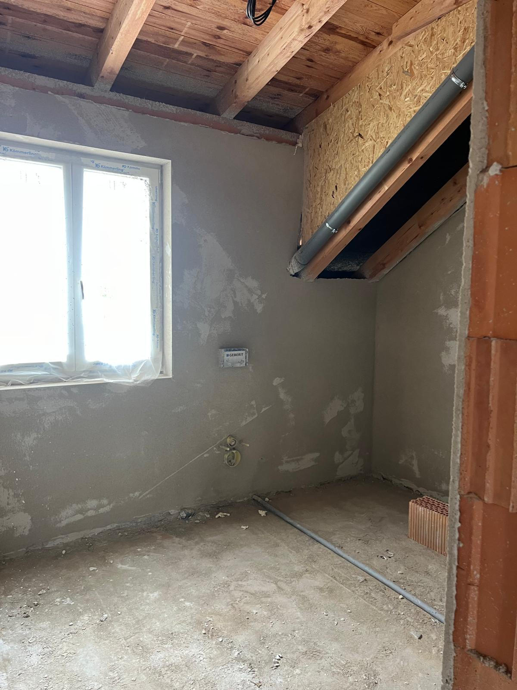
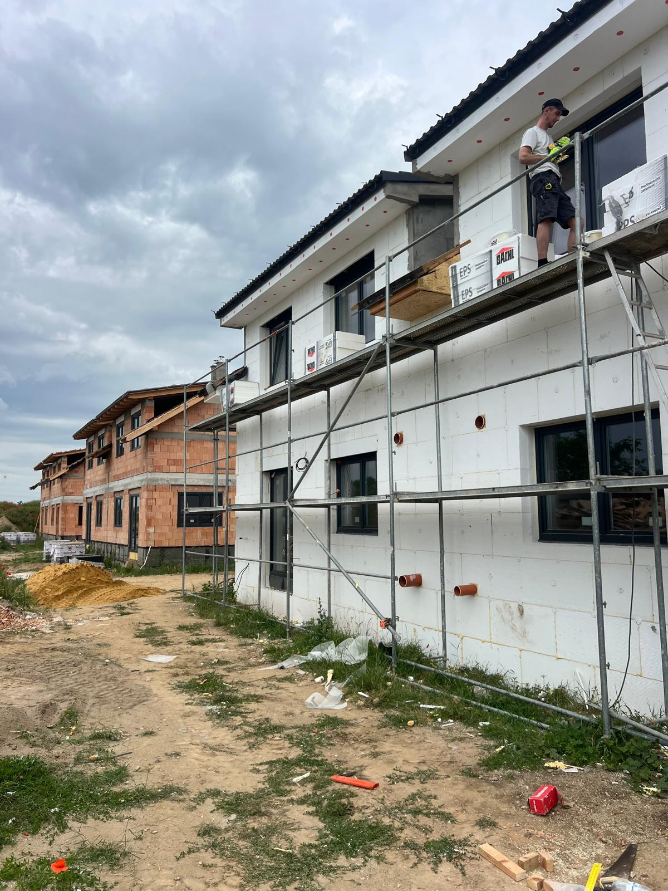
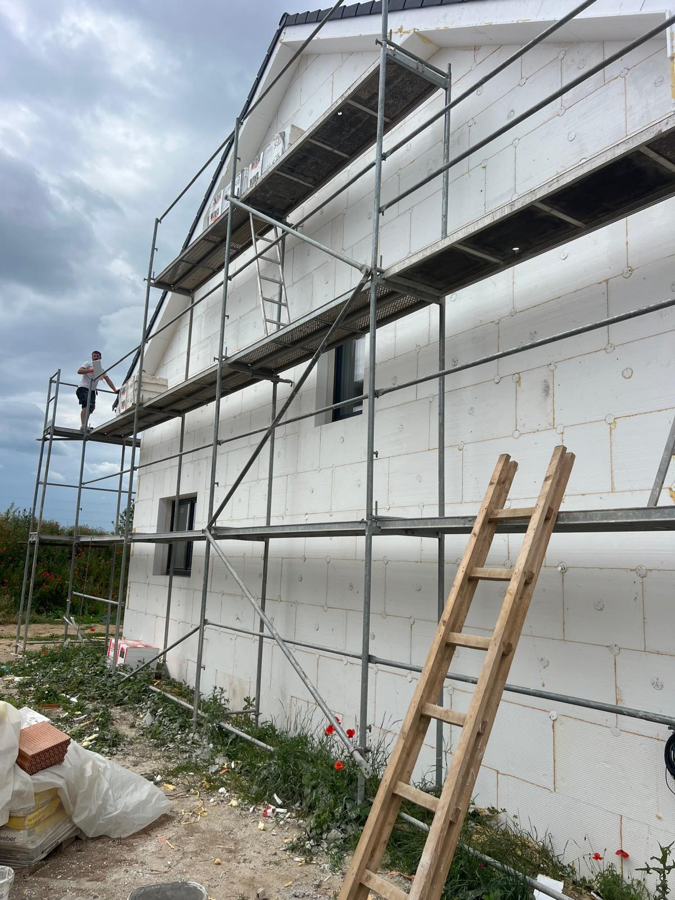
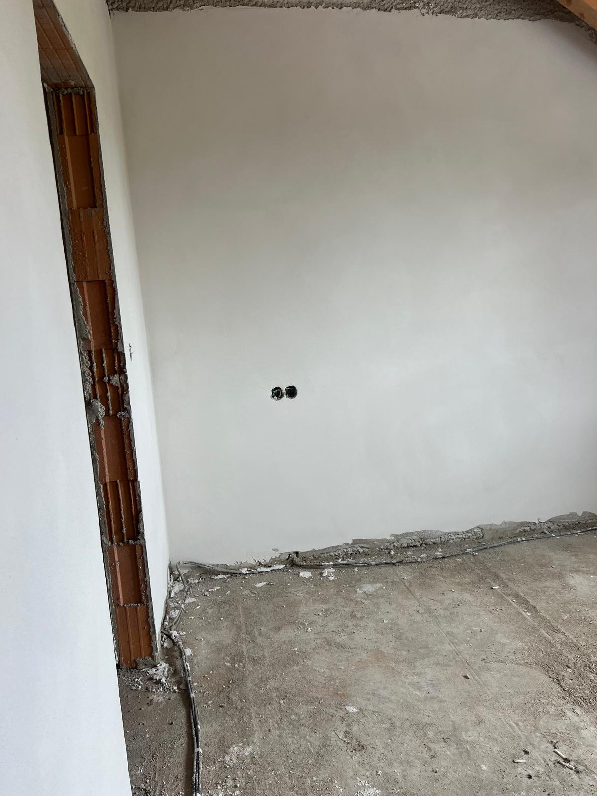
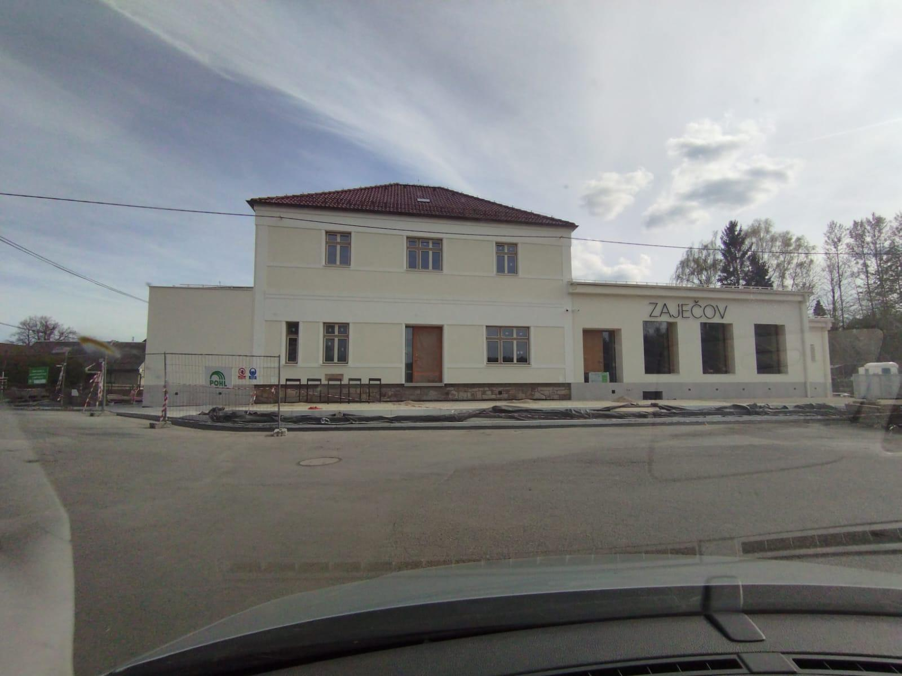
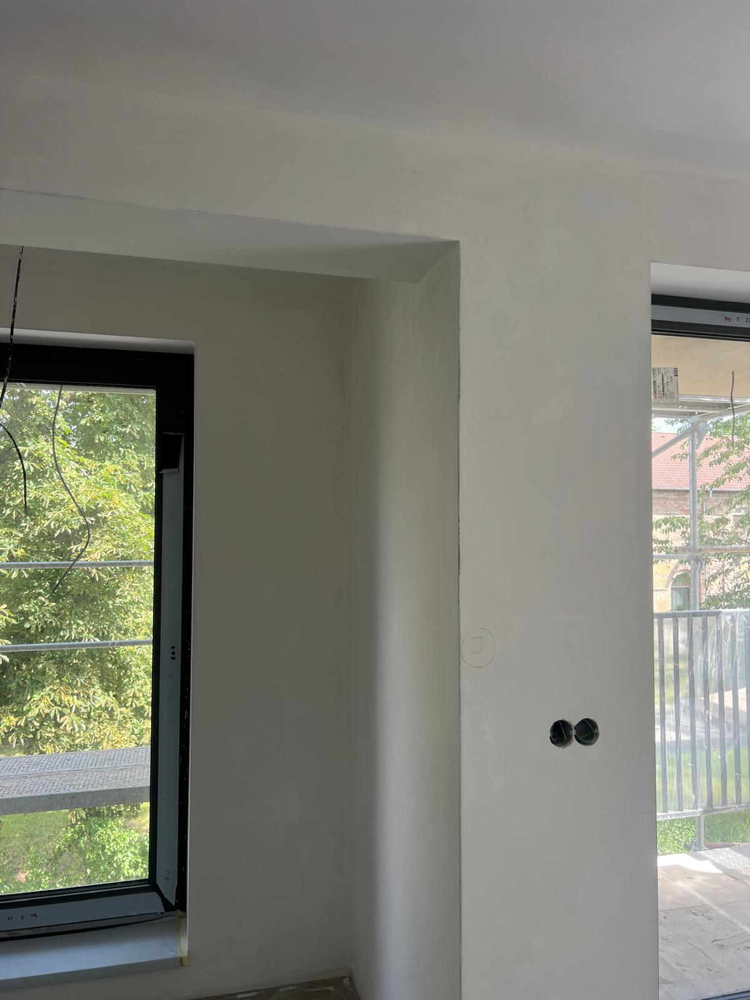
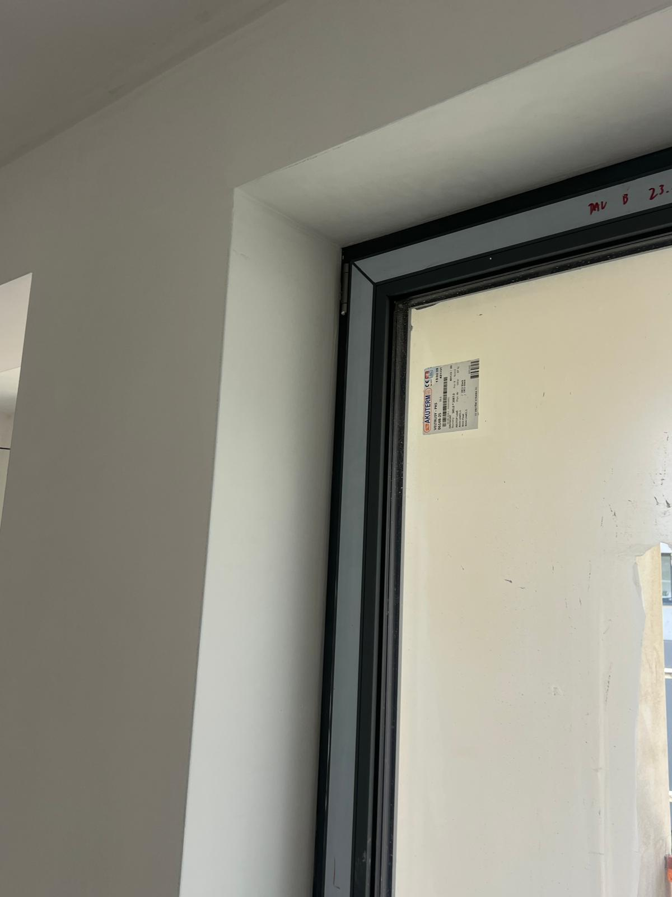
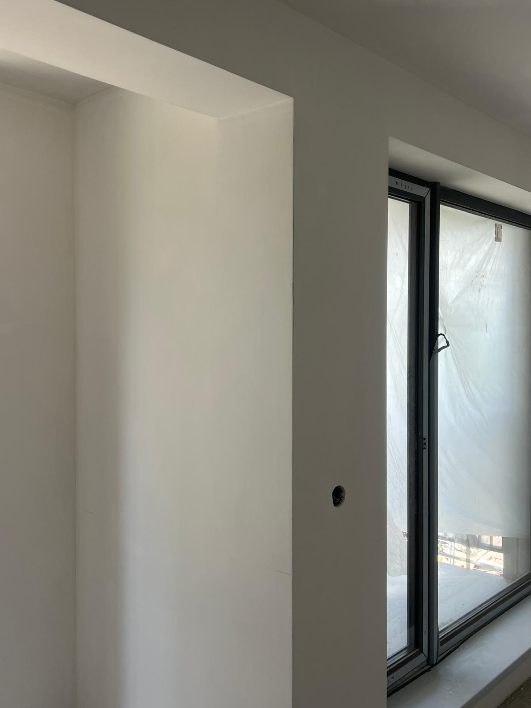
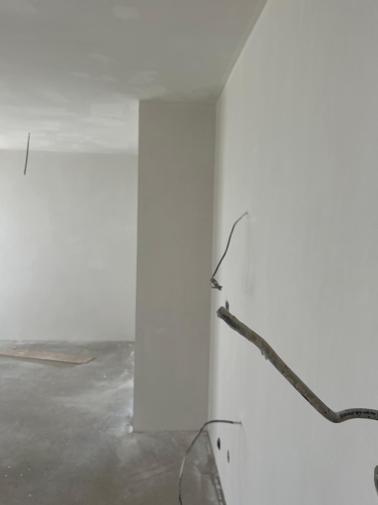
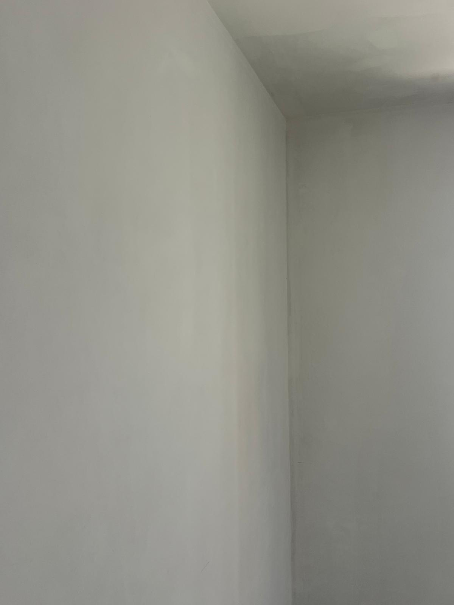

Sádrové omítky Hostivice
KOST STAV PRAHA s.r.o. zajišťuje sádrové omítky v Hostivici. Přijedeme na zaměření, doporučíme vhodný postup a připravíme nezávaznou cenovou nabídku zdarma.
Sádrové omítky Hostivice – realizace
Ukázky dokončených omítek a fasád z našich realizací.











Sádrové omítky Hostivice s důrazem na kvalitu a termín
Když řešíte sádrové omítky v Hostivici, potřebujete řemeslníky, kteří přijedou v domluvený čas, jasně vysvětlí postup a dodrží kvalitu detailů. KOST STAV PRAHA s.r.o. pomáhá investorům, majitelům domů i správcům bytových objektů s realizací od prvního zaměření po finální předání. V lokalitě Hostivice se často setkáváme s kombinací různých podkladů, omezeného přístupu a požadavku na rychlé dokončení, proto vždy začínáme pečlivou prohlídkou stavby.
Na stavbě používáme ověřené postupy a materiály. Pro sádrové omítky volíme kvalitní sádrové směsi s příjemným vnitřním klimatem a dobrou paropropustností. Zákazníkovi vysvětlíme rozdíl mezi variantami, upozorníme na omezení podkladu a doporučíme řešení, které má smysl pro konkrétní dům nebo byt. Nejde nám o nejdražší variantu za každou cenu, ale o poměr ceny, životnosti a výsledného vzhledu.
Jak probíhá realizace v Hostivici
Typický postup zahrnuje kontrolu vlhkosti podkladu, penetraci, přesné založení rohů a uhlazení povrchu do finální roviny. Před zahájením si společně potvrdíme rozsah, přístup na stavbu, ochranu okolních ploch a návaznost na další omítkářské nebo fasádní kroky. Díky tomu zákazník přesně ví, kdy práce začnou, co má být připravené a jak bude vypadat předání.
Při realizaci se soustředíme hlavně na přípravu. U služby sádrové omítky nestačí přivézt materiál a začít nanášet první vrstvu. Nejdříve kontrolujeme rovinnost, savost a pevnost podkladu, řešíme zakrytí oken, dveří, podlah a okolních částí stavby. Poté navrhujeme technologii, která odpovídá provozu místnosti, typu konstrukce a plánovanému dokončení. Jiný postup volíme pro novostavbu, jiný pro starší zdivo a jiný pro fasádu vystavenou počasí.
Hostivice je lokalita, kde řešíme hlavně rodinné domy, byty, řadové domy a provozní prostory. Proto se neptáme jen na metry čtvereční, ale také na typ objektu, vlhkost, stav původních vrstev, požadovanou odolnost a finální vzhled. Tato zdánlivá drobnost často rozhoduje o tom, zda bude výsledek spolehlivý a bez pozdějších oprav.
Související omítkářské a fasádní služby
Na jednu zakázku často navazují další povrchové vrstvy. Pokud při realizaci vyjde najevo, že je vhodné doplnit opravy podkladu, stěrky, zateplení fasády nebo finální fasádní omítku, umíme vše sladit v jednom harmonogramu. Nejčastěji se službou sádrové omítky souvisí:
- strojní omítky
- štukové omítky
- vápenocementové omítky
- fasádní práce
Omítky a fasády v lokalitě Hostivice
Vyberte si službu pro omítky, zateplení fasád nebo fasádní práce v lokalitě Hostivice. Všechny stránky obsahují konkrétní informace, interní odkazy a možnost rychlé poptávky.
Realizace v lokalitě Hostivice
Ukázky dokončených omítek a fasád se stejnou službou v této lokalitě. Každá realizace odkazuje na detail projektu, službu a město.
Výhody spolupráce s KOST STAV PRAHA s.r.o.
Stavíme na poctivém přístupu, kvalitních materiálech a srozumitelné komunikaci. Nejdůležitější je pro nás dobrý výsledek, rovný povrch a čistý detail omítek nebo fasády.
Bezplatné zaměření a cenová nabídka pro Hostivice
Dlouholeté zkušenosti s pracemi jako sádrové omítky, omítky i fasády
Kvalitní materiály a postup odpovídající podkladu, vlhkosti a provozu místnosti
Dodržování termínů, průběžná komunikace a jasně domluvený rozsah prací
Proč řešit poptávku včas
Včasná poptávka pomáhá sladit materiál, přípravu podkladu, technologické přestávky a termín pro navazující řemesla bez zbytečného čekání.
Stačí zavolat nebo poslat fotografie a krátký popis projektu.
FAQ: Sádrové omítky Hostivice
Nejčastější dotazy před zaměřením a realizací.
Umíte spojit sádrové omítky s dalšími omítkářskými nebo fasádními pracemi?
Ano, podle potřeby navážeme na strojní omítky, sádrové omítky, štukové omítky, vápenocementové omítky, zateplení fasád nebo fasádní práce. Výhodou je lepší návaznost a méně komunikace s několika dodavateli.
Provádíte i navazující povrchové úpravy?
Ano, kromě hlavní služby umíme zajistit zapravení detailů, lokální opravy, stěrky, přípravu pro malbu a sjednocení povrchů podle dohody.
Jak dlouho trvá realizace?
Délka závisí na rozsahu, technologických přestávkách a připravenosti stavby. Po zaměření vám řekneme realistický harmonogram a upozorníme na místa, která mohou termín ovlivnit.
Nezávazná poptávka pro Hostivice
Rádi Vám spočítáme nezávaznou cenovou nabídku na omítky nebo fasádu. Vyplňte prosím krátký formulář a my se Vám co nejdříve ozveme.
Pro přesnější kalkulaci nám prosím pošlete plochu v m², fotky stavby, případně projektovou dokumentaci.
Telefon a WhatsApp
Telefon
+420 777 977 571
E-mail
omitkykoststav@gmail.com
Působnost
KOST STAV PRAHA s.r.o. realizuje sádrové omítky v Hostivici, v Praze a ve Středočeském kraji.
Zavolejte nám ještě dnes a získejte nezávaznou cenovou nabídku zdarma.
Rádi posoudíme váš projekt, doporučíme vhodné řešení a připravíme férovou cenovou nabídku.